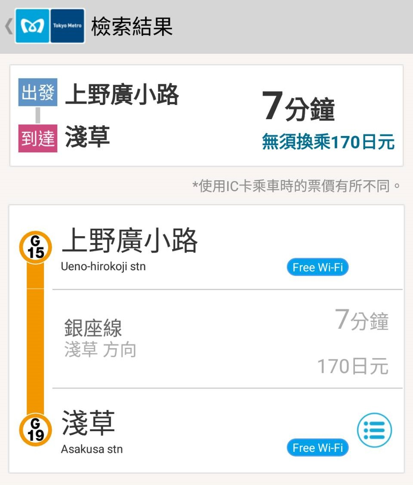
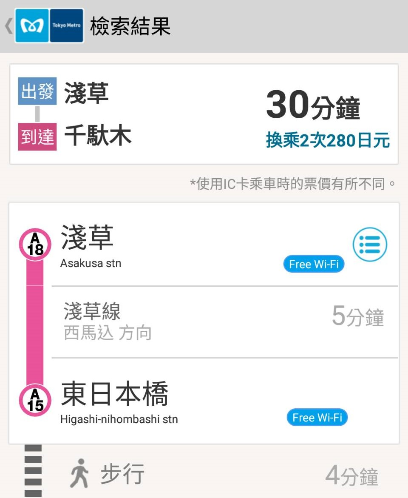
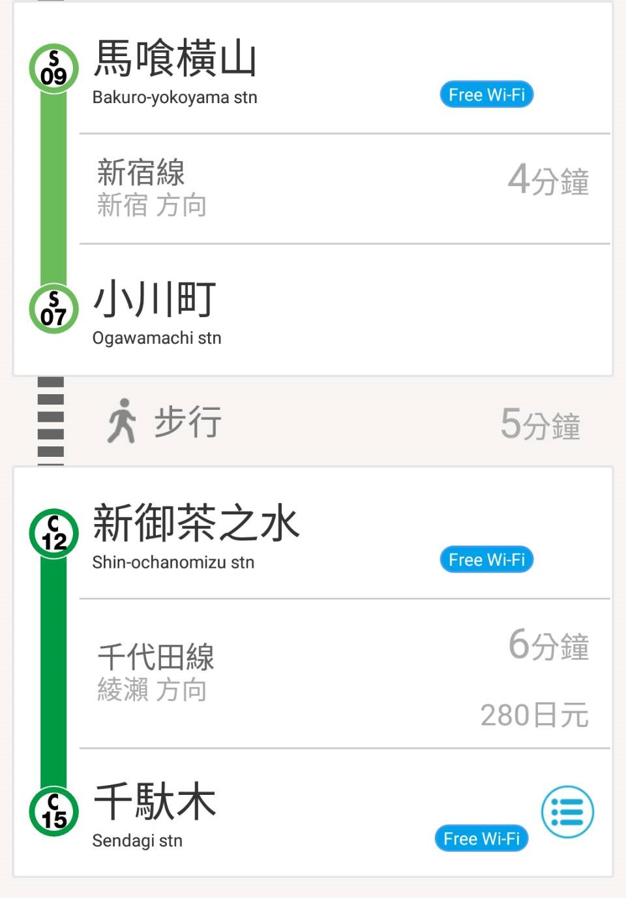

DAY0
行前準備
DAY1
飛東京成田
DAY2
池袋、澀谷
DAY3
大神宮、秋葉原
DAY4
淺草、谷根千
DAY5
六本木
DAY6
回家啦!
07:40
起床梳妝
09:20
離開飯店
從飯店走到
上野廣小路
MAP
上野廣小路 → 淺草(約7分鐘，170円) 
10:00
淺草愛和服1號店
東京都台東区花川戸1-13-12
03-6231-6658
MAP
11:00
浅草寺
MAP
仲見世通商店街
MAP
15:00
還和服
15:30
前往谷根千
回淺草車站
MAP
淺草 → 千馱木(約30分鐘，280円)  
淺草 → 上野廣小路 走路到湯島 → 千馱木
16:10
前往
Yanaka Ginza 谷中銀座
MAP
??:??
千馱木 → 到家 (隨機應變)
DAY5